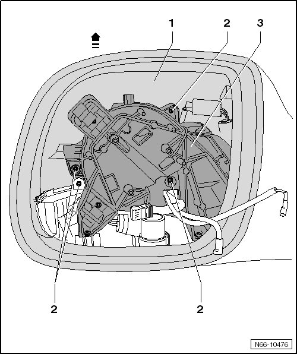

Mirror Housing
Exterior Mirror. from 11.2006
Mirror Housing
Removing

- Mirror Glass, Removing, refer to --> [ Mirror Glass ] Mirror Glass
- Remove the mirror motor. Refer to --> [ Mirror Motor ] Mirror Motor
- Remove the 4 screws - 2 -.
- Remove the mirror housing - 1 - - arrow - from the mirror base plate - 3 -.
Installing
- Check felt strips on front lower edge of mirror housing.
To install, perform the steps used for removal in reverse order.